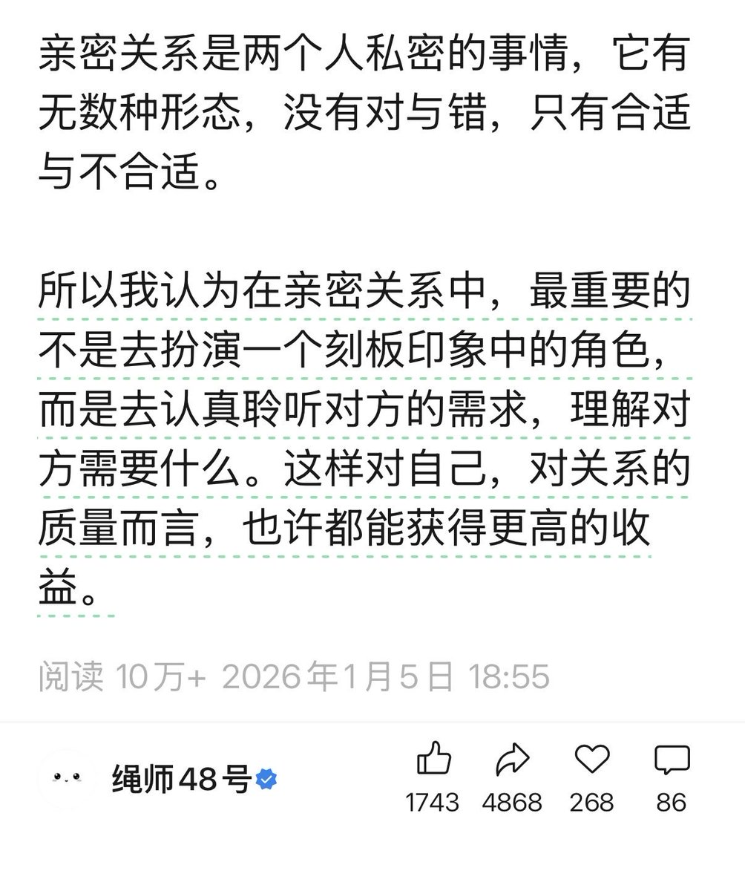

1713✝️❤️🔥
@sss_1713
男女都需要去了解两性关系和一些自己未必认同的亚文化。不必太深入的去参与，也不一定非要接受，但至少应该明白它们为什么会存在，以及如何尊重他人的选择。
“理解一种现象”，并不等于“必须成为它”，但理解本身，可以减少很多无意义的污名化和敌意。

1713✝️❤️🔥
@sss_1713
为什么要攻击绳师48号，我觉得越是小众圈子，越需要正确的引导和公开讨论，很多人一看到“SM”“绳缚”就下意识觉得不该被谈论，但现实是，这类文化本来就客观存在。与其把它永远压在地下、靠误解和猎奇传播，不如把一些边界、风险、自愿原则真正拿到台面上讲清楚。 https://t.co/nja7nMVYMy